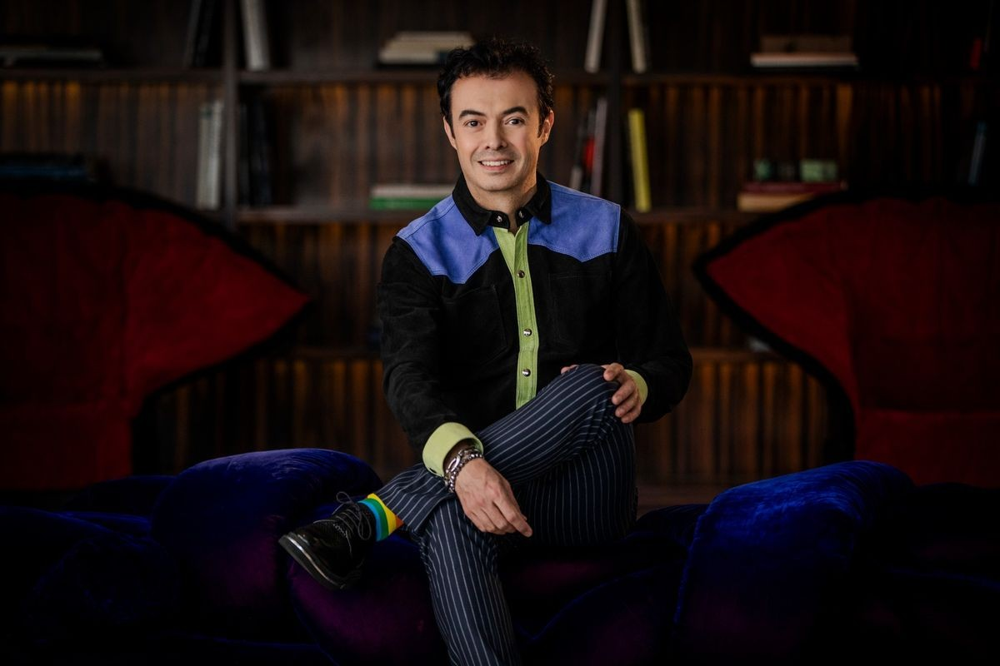

tecnologia
Criador do Orkut planeja relançar a rede social com apoio de inteligência artificial
11/11/2026 às 03:36 (horário de Cuiabá)

Doze anos após o encerramento das atividades pelo Google, o engenheiro Orkut Büyükkökten busca trazer a rede social de volta. O fundador recuperou recentemente os direitos sobre a marca e disponibilizou um abaixo-assinado para medir o interesse do público em uma nova versão da plataforma.
A proposta visa integrar inteligência artificial para restaurar conexões mais humanas na internet. Büyükkökten argumenta que as redes sociais atuais se tornaram reféns de algoritmos viciantes e métricas de engajamento, defendendo o retorno a um ambiente digital mais saudável.